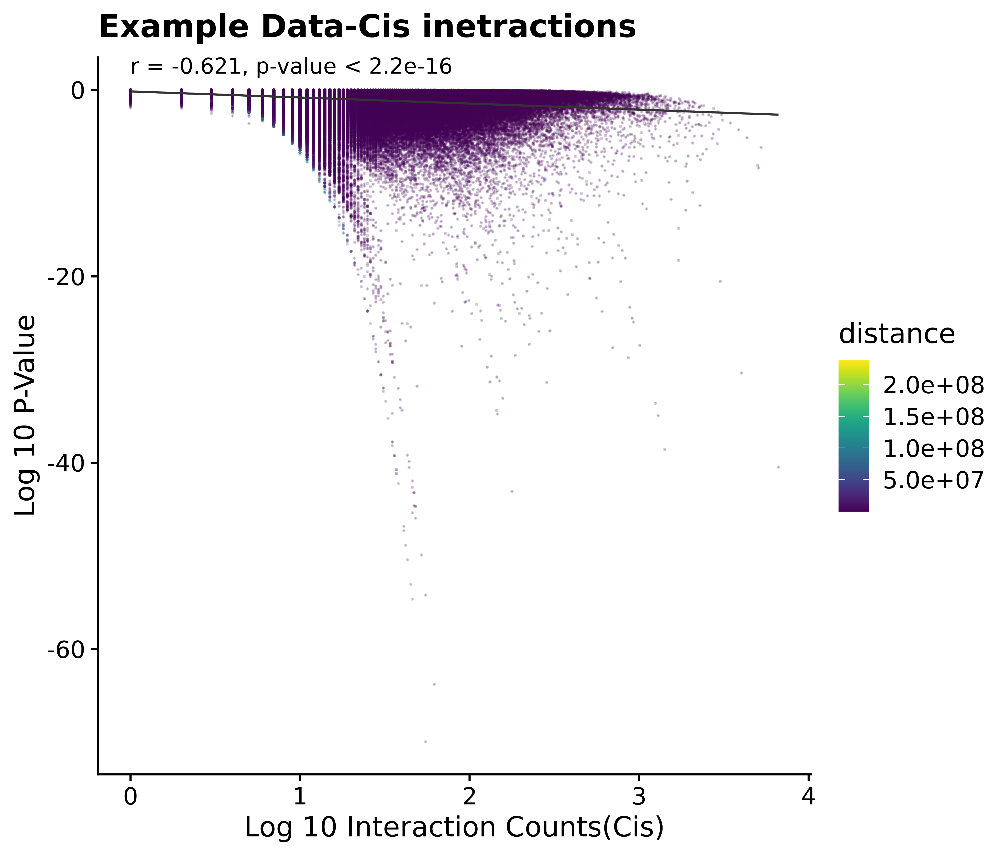
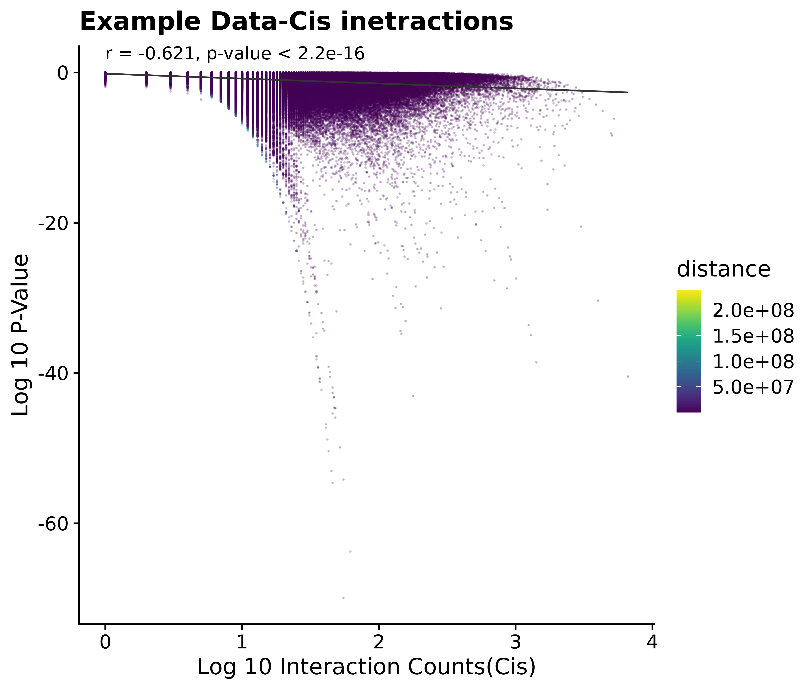

Chicane Analysis
Shashank
11/06/2021
Initial Observations
We look to analyse the ouput from the initial chicane run. Compare the results from the previous chicago run.
Introduction to the Chicane
CHiCANE was designed to identify regions of interest that interact more than expected by chance. To indetify the interaction peaks, CHiCANE models the expected number of reads linking two restriction fragments as a function of the distance between the loci and the ‘interactibility’ of the bait fragment; that is, its inherent propensity to interact with other fragments.
Let \(Y_{ij}\) represent the count of interactions between a bait \(i\) and a fragment \(j\),\(d_{ij}\) be the distance between the bait and the otherEnd and \(t_{i}\) denote the number of reads linking a bait \(i\) with another fragment in trans. \(Y_{ij}\) is such that it is assumed to follow a distribution with a mean \(\mu_{ij}\) as: \[ \mu_{ij} = \beta_0 + \beta_1 \log(d_{ij}) + \beta_2 \log(t_i+1) \]
For bait to bait interactions, terms are added to the model to adjust for trans counts of the other end, fragment j, and the product of trans counts of both fragments as: \[ \mu_{ij} = \beta_0 + \beta_1 \log(d_{ij}) + \beta_2 \log(t_i+1) + \beta_3 \log(t_j + 1) + \beta_4 \log(t_i +1) \log(t_j+1)\] Each possible interaction is assaigned an expected \(\mu_{ij}\) and a p-value for the observed counts \(y_{ij}\) versus what is expected by chance is calculated as: \[p = P(Y_{ij} \geq y_{ij})\]
Score distribution for the data.
Let us first look at the scores for our data. The threshold value used in the chicane paper is q-value<0.005

Cis-interactions
Since majority of interactions detected are trans interactions we would like compare how is the distribution of q.value in both the cases.


Distribution of q.value
We can sort the significant interactions using a threshold of 0.05

Distribution of number of reads wrt to distance and score
We look at the distribution of read count and scores with the distance of the interaction


Distribution of N-reads
Score relationship with distance
Another plot to compare is the distribution of the q.value with respect to the distance of the interactions.
 

Distribution of q.value
Correlation plot
We can plot the correlation between the count of each interaction with the \(p\)-value.  # Percentage of genome covered The following plot indicates what fraction of reads for each RNA are on its home chromosome.
# Percentage of genome covered The following plot indicates what fraction of reads for each RNA are on its home chromosome.

## used (Mb) gc trigger (Mb) max used (Mb)
## Ncells 11689520 624.3 17671836 943.8 17671836 943.8
## Vcells 798374066 6091.2 1215778551 9275.7 1070454338 8167.0Trans vs cis interactions
It should be noted that majority of the interactions in our data are trans interactions(87.9932091), therefore the distance relation of the score can not be visualized easily here.

Comparison with previous plots
Previously we had seen certain plots which stood out when looking at the relationship between the probability of detencting an interaction and the distance.


We can compare the plots for these with plot of q.value vs distance for these particular RNAs.

 We can compare these plots to the cases where significant interactions are found. Such as,
We can compare these plots to the cases where significant interactions are found. Such as,